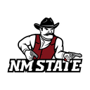
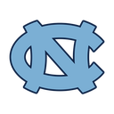

Largest model-market edge
Sacramento StateatEastern Michigan
Model -3.6Total 51.8Home win 63.6%
Market -7.5 · total 53.5 · injuries unreleased
Open full matchup →
| Game | Side | Market | Model | Gap |
|---|---|---|---|---|
| Sacramento State at Eastern Michigan | Sacramento State | -7.5 | -3.6 | +3.9 |
| Game | Side | Market | Model | Gap |
|---|---|---|---|---|
| Jacksonville State at North Dakota State | Over | 48.5 | 53.5 | +5.0 |
| NC State at Virginia | Under | 54.5 | 51.1 | +3.4 |
| San Jose State at USC | Under | 58.5 | 55.2 | +3.3 |
| New Mexico State at Florida State | Under | 53.5 | 50.4 | +3.1 |
| Team | Market | Model | Market | Edge |
|---|---|---|---|---|
| Penn State | Playoff | 51.9% | 21.1% | +30.8% |
| Texas Tech | Playoff | 94.7% | 64.3% | +30.4% |
| James Madison | Conference title | 53.7% | 25.0% | +28.7% |
| Texas Tech | Conference title | 74.5% | 50.0% | +24.5% |
| Boise State | Conference title | 61.0% | 36.8% | +24.3% |
| Game | Spread range | Total range | Action |
|---|---|---|---|
| San Jose State at USC | 2.0 | 1.0 | Compare books |
| Sacramento State at Eastern Michigan | 1.0 | 0.0 | Compare books |
| New Mexico State at Florida State | 1.0 | 1.0 | Compare books |
| Hawaii at Stanford | 0.5 | 1.0 | Compare books |
| North Carolina at TCU | 0.5 | 1.0 | Compare books |

New Mexico StateatFlorida State
North CarolinaatTCUDaily changes and action queue
Usable with warnings · Slate games 902Team strength and source disagreement
Usable with warnings · Composite 138/138First-pass model versus market
Usable with warnings · Games 106Full game research workspace
Usable with warnings · Matchups 902Book-by-book prices and history
Usable with warnings · Games 106Weekly games, results, and readiness
Healthy · Games 902Win totals and long-term markets
Usable with warnings · Teams 138Standings, projections, and title races
Usable with warnings · Conferences 10Projected field and advancement odds
Usable with warnings · Simulations 5000Season outcome distributions
Usable with warnings · Simulations 5000Tracked model performance and positions
Healthy · Games evaluated 902Prototype metrics are generated only from the listed repository artifacts. Spread, total, and futures opportunities remain distinct. Market inefficiencies describe book or model disagreement and are not promoted as model opportunities. Injury context is explicitly marked unreleased because the current fixture has no actionable CFBDepth reports.